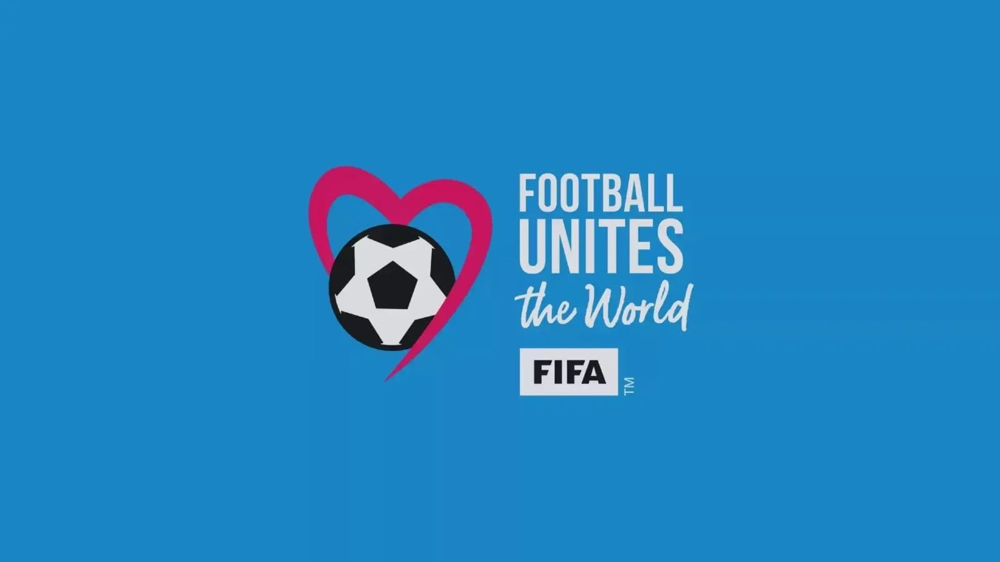
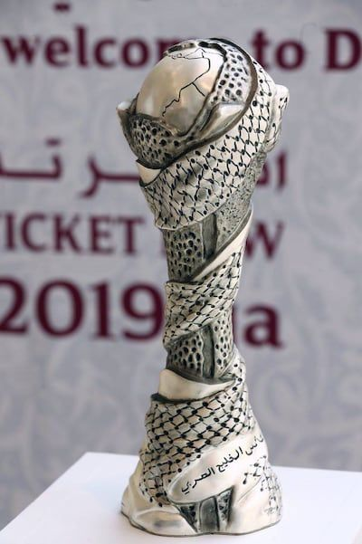
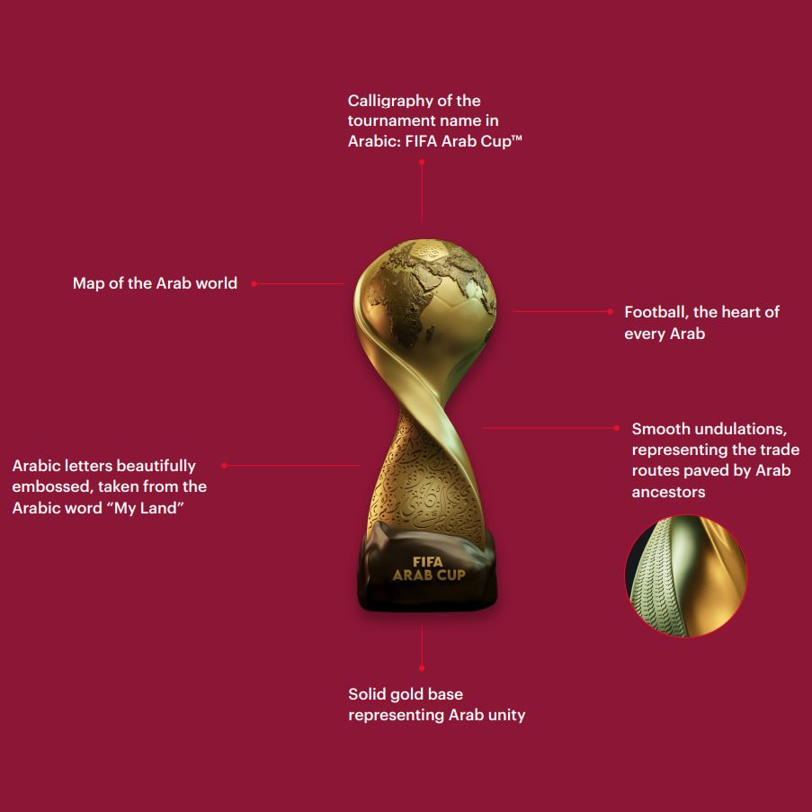

أصدقائي،
اني أحب كرة القدم. أحبها من أول ما وعيت على الدنيا، وأني متأكد أكو ناس هواية يتمنون لو أسكت عنها شوية. بس آني مو حالة خاصة. أكو تقريبًا ٤٦ مليون عراقي يحبون الطوبة هم، يمكن مو بقدّي، بس بعضهم صدگ يحبونها أكثر مني بهواية (وأظن هذا ينطبق على أبويه).
والعراق مو حالة خاصة، لأن عشق هاي اللعبة يتجاوز الحدود ويشمل المنطقة كلها. مصر، الجزائر، السعودية، المغرب، هاي منتخبات تُعدّ قوى إقليمية، سواء تاريخيًا أو حاليًا. والكرة دتصعد ببلدان ثانية بالمنطقة هم، مثل قطر، اللي أحرزت كأس آسيا مرتين متتاليتين، والأردن، اللي وصلت مؤخرًا لنهائي كأس آسيا ونهائي كأس العرب، فضلًا عن مشاركتها بأول كأس عالم بتاريخها بالنسخة الأخيرة.
روح للقاهرة، الرياض، الدار البيضاء، الجزائر العاصمة، الكويت، ونفس السالفة. هاي المنطقة عايشة على اللعبة، ويمكن تكون من الأشياء القليلة اللي تشترك بيها كل الدول العربية، ومن الأشياء القليلة اللي تگدر توقّف شعب كامل على رجله تسعين دقيقة.
أگدر أظل أحكي بهالموضوع بلا نهاية، والموضوع يشمل كرة الأندية هم. والله جان أكو وقت بالأردن، وآني بعدني زغير، محد يسألك أي فريق تشجع، لا جان يسألك "مدريدي؟ ولا برشلوني؟"، وهَلُمّ جرّا.

ولهذا دائمًا يگولون إلنا إن الكرة توحّدنا. بالحقيقة، ما توحّدنا. أو على الأقل، مو بالطريقة اللي يصوّرونها إلنا.
أبدأ بكأس الخليج، المقامة حاليًا بالسعودية. انطلقت البطولة بالبحرين سنة ١٩٧٠ بمشاركة أربع منتخبات، وقضت أغلب عمرها خارج روزنامة الفيفا، يعني عمليًا جانت بمثابة مباريات ودية. لاعبين من الدوريات المحلية، لا نقاط تصنيف ذات قيمة، ولا مقعد بكأس العالم أو كأس آسيا على المحك. على الورق، ولا شي. بس الكأس نفسه يجنن:

الشعار "خليجنا واحد". وبعدين يلعب العراق ويا الكويت وتگوم الدنيا وما تگعد، لأن محد بالملعب ناسي ١٩٩٠، ولهذا ما انسمح للعراق يرجع للبطولة إلا سنة ٢٠٠٤. أو تستضيف قطر نسخة ٢٠١٩ وهي تحت حصار مفروض عليها من السعودية والإمارات والبحرين، والثلاثة قرروا يشاركون باللحظة الأخيرة. أو تلعب ويا اليمن، اللي أصلًا مو جزء من الخليج؟ يعني بصراحة العراق هم مو خليجي، بس تگدر تدافع عن الفكرة بحجة البصرة. بس اليمن؟ أعتقد هذا تاريخ البطولة.
هاي النسخة مختلفة هم. لأول مرة تقع ضمن روزنامة الفيفا، فصار من حق المنتخبات تستدعي أفضل لاعبيها، بغض النظر عن النادي اللي يلعبون له. وللتوضيح، إذا المباراة الدولية مو ضمن فترة التوقف الدولي، يحق للأندية ترفض تسريح لاعبيها للمنتخبات. بس هالمرة، الأندية جانت ملزمة، والمنتخبات استغلت هالشي، فالبطولة اللي تاريخيًا جانت تنافسية كلش، صارت هسه جدية هم بين المنتخبات المشاركة.
والبارحة طلّعت لنا شي صدگ ما جنت أتصور ممكن يصير.
العراق وعُمان خلّصوا المجموعة متساويين بكلشي. نفس النقاط، نفس الأهداف المسجلة، نفس الأهداف المستقبلة، وحتى نفس عدد البطاقات الصفراء. عُمان قلبت تأخرها بهدف وغلبت الكويت ٣-١ بآخر الدقايق، بينما السعودية غلبت العراق ٢-٠، وفجأة ما بقى شي باللوائح يفصل بين المنتخبين. بالبداية لاعبين عُمان بدوا يحتفلون، وآني قضيت عشرين دقيقة ودمّي يفور من السيناريو اللي صار. بعدين طلع متحدث رسمي وأعلن إن المنتخبين متعادلين، وراح تُجرى قرعة الساعة ١٢ بالليل. فقضيت ساعتين ثانية أنتظر هالقرعة الخرطي وأعصابي تالفة.
وهيج سحب الاتحاد القرعة. بفندق بجدة.
طلعت ورقة عُمان من الطاسة والعراق رجع للبيت. لوائح الفيفا نفسها هسه تحسم هالحالة بالضبط على أساس التصنيف العالمي، وهذا جان راح يأهّل العراق، ومدربنا جراهام ارنولد گالها بصوت عالي. اتحاد الخليج ما همّه، "بطولتنا، وقوانيننا" گالوله.
وردة الفعل بالمنطقة كلها اختصرت كلشي. العمانيين يحتفلون وكأنهم أخذوا البطولة كلها. العراقيين (كالعادة) يصيحون مؤامرة. والسعوديين والكويتيين والبحرينيين، اللي ما إلهم ناقة ولا جمل بالموضوع، طايرين من الفرح بكل ثانية. وآني جنت فاكر البحرينيين رايقين.
محد جان محايد. ومحد يوم كان محايد.
خلونا هسه نوسّع الصورة لكأس العرب، ونفس الشي بس على خريطة أكبر. أحب كأس العرب. نسختي ٢٠٢١ و٢٠٢٥ بقطر، تحت مظلة الفيفا، جانت من أحلى الكرة العربية اللي شفتها. وهي هم عدها كأس يجنن:

بس حط هاي البلدان ببطولة وحدة، وتاريخها يجي وياها. المغرب والجزائر، اللي حدودهم مغلقة من ثلاث عقود، تلاگوا بربع نهائي ٢٠٢١ وحسيتها أكبر بهواية من مجرد ربع نهائي؛ مصر والجزائر بعدهم شايلين ٢٠٠٩ وأم درمان (يمكن من أعظم قصص تصفيات كأس العالم بالتاريخ)؛
تونس والجزائر؛
الإمارات وقطر؛
سوريا ولبنان؛
الكويت والعراق؛
السعودية والعراق؛
الأردن والعراق.... P:؛
ومصر وتقريبًا أي أحد.
كل مباراة وراها قصة، وكل قصة سبب حتى تكره واحد طول الأسبوع. والكرزة اللي فوق الكيكة صدگ تكون لو نعزم إيران تشارك هم.
ولاحظ منو أطراف كل هالضغائن. عمرها ما تكون ويا واحد بعيد. محد بمسقط يهمه يغلب بلجيكا مثل ما يهمه يغلب الكويت. ما تكره الغريب، تكره جارك، اللي تقلّد لهجته وتاكل أكله، وابن عمه يمكن حتى متزوج بنت خالتك. التنافس يشتغل بس لأن نعرف بعض زين. وهذا مو عكس القرب. هذا هو شكل القرب بهالمنطقة.
فإي، أحب كأس العرب، بس هي بعيدة عن الكمال. مشكلتي بهيكلية البطولة، وهذا انتقاد سمعته وأتفق وياه تمامًا. كأس العرب بطولة تابعة للفيفا، لكنها مو ضمن روزنامة الفيفا. يعني الأندية الأوروبية غير ملزمة بتسريح أي لاعب. فمصر والجزائر والمغرب، وحتى العراق وسوريا وفلسطين، اللي أبرز لاعبيهم يحترفون بأوروبا أو أمريكا الشمالية أو غيرها حسب الجالية، ما يگدرون يشاركون بأقوى تشكيلاتهم.
أما المنتخبات العربية الآسيوية فأغلبها تگدر، لأن معظم لاعبيها بالدوريات المحلية. والمنتخبات العربية بشمال أفريقيا ينتهي بيها الحال تستدعي لاعبيها المحليين أو منتخباتها الأولمبية. وهيج المغرب، بدون لاعبيه الأساسيين أو محترفيه بأوروبا، غلب الأردن بتشكيلته الكاملة (عدا موسى التعمري) بنهائي اللي فات.
لا تفهموني غلط، جان نهائي حلو، بس يكسر الوهم شوية لما يكون البطل مو "المغرب" فعلًا، وإنما "المغرب الرديف"، والكل يدري. لكن نقطة خلافي ويا المنتقدين هي لما يروحون خطوة أبعد ويگولون هاي البطولات ما إلها فايدة. الاثنين، كأس الخليج وكأس العرب. يگولون ألغوها وركّزوا على التصفيات.
لا. هاي المنطقة تحب الكرة وتنقصها هواية منها. دورياتنا متفاوتة، اتحاداتنا فوضى، وأغلب لاعبينا يلعبون عدد محدود من المباريات التنافسية بالسنة ضد منافس عنده مستوى. هاي البطولات هي هاي المباريات. هي المكان اللي يكتشف بيه لاعب الدوري المحلي إذا يتحمل ضغط ملعب مليان، والمكان اللي يعرف بيه المدرب على منو يگدر يعتمد. ما تتطور بالكرة إذا تلعب أقل منها، ولو جان القرار بيدي جان حتى سويت كأس للشام، وكأس لغرب آسيا / الشرق الأوسط، وكأس لشمال أفريقيا، وغيرها. إحنا نحب الكرة، ونحب بلداننا، انطونا منها أكثر سوا.
وهنا المفارقة. البطولات اللي نكره بيها بعض أكثر شي هي نفسها البطولات اللي تبني المنتخبات اللي بالنهاية كلنا نشجعها. الأردن ما وصل لكأس العالم من فراغ، وإنما تكوّن على الزخم والمكاسب اللي حققها من مشاركاته بكأس آسيا وكأس العرب، وهو يغلب ويخسر قدام نفس الجيران سنة ورا سنة. والمغرب يگدر ياخذ كأس العرب بفريقه الرديف لأن عمقه انبنى بنفس الطريقة.
وبعدين يجي كأس العالم، وكل هذا يتبخر.
فجأة نصير إخوان. العُماني اللي احتفل بطلعة العراق البارحة راح يشجع العراق بكأس العالم القادم. والجزائري اللي ما يطلع منه كلمة زينة على المغرب جان يصيّح للمغرب سنة ٢٠٢٢، مثلنا كلنا. ولما السعودية غلبت الأرجنتين بنفس السنة، المنطقة كلها احتفلت وكأنه فوزها هي. كل منتخب عربي يصير منتخب كل العرب، وتطلع إعلانات طلبات، وتطلع منشورات "أمة واحدة"، وتطلع أعلام بلدان ثانية على البالكونات. ولمدة شهر، الوحدة اللي الكل يوعد بيها تصير موجودة فعلًا، ويمكن نگدر نگول إن الاحتفال بالكرة، بهذا الشهر بالذات، يوحّد العرب صدگ.
موجودة لأن أخيرًا أكو أحد ثاني نلعب ضده. إسبانيا، فرنسا، البرتغال. غالبًا راح ننغلب، بس راح نلعب! والقصص اللي تطلع إذا صار فوز نادر أعظم من أي قصة ثانية بالكرة.
بكاس العالم اللي فات، مصر جانت متقدمة ٢-٠ على الأرجنتين وباقي إحدعش دقيقة. ولما الأرجنتين سجلت الثالث بالوقت بدل الضائع وكمّلت الريمونتادا، آني جنت مصري ذاك اليوم. حسيت بالقهر. وآني أشتغل ويا مصريين هواية، فلما رحت للدوام باليوم الثاني، آني هم صدّگت بالمؤامرات. ومرة ثانية، ذاك اليوم، حسيت نفسي مصري.
لعقود جنا نروح لكأس العالم أغلب الوقت بس حتى نكمّل العدد، فأي منتخب عربي يحقق أي شي جان نحسه إلنا كلنا. نعرف قد ما هالشي نادر، لأن كلنا ذقنا الخسارة سوا.
مضحكة، هاي العائلة العربية بالضبط. أتعارك ويا أخواني طول السنة، على نفس السوالف التافهة، بس من يحاول غريب يتحرش بواحد منا، نصير إيد وحدة. وأول ما يروح الغريب، نرجع للعركة، وبعد كم شهر من نهاية كأس العالم، نرجع للفندق بجدة، نسحب أسامي من طاسة، ونفور من القهر.
وآني مو أحسن من أحد.
لما الأردن طلّع العراق من كأس آسيا ٢٠٢٣، بالطريقة المؤلمة اللي صارت بيها (مؤامرة مشبوهة على أيمن حسين، شلون لاعب ينطرد لأن احتفل!)، خسرت تقريبًا نص أصدقائي بسببها. بس رغم هذا شجعت الأردن بكأس العالم.
فيمكن الكرة توحّدنا بالنهاية، بس لشهر واحد كل أربع سنين. لكن هذا الشهر ما يكون موجود لولا الـ٤٧ الباقية، وبهذول الـ٤٧، نرجع بالضبط مثل ما جنا.
يعني يا جماعة، حتى العراق، المنتخب اللي أحبه أكثر شي، حب حياتي، ما يگدر يوحّد الناس اللي يمثلهم قميصه. أكو أكراد عراقيين يرفضون يعترفون بالمنتخب الوطني كمنتخبهم ويريدون منتخب كردي بداله. أكو شيعة وسنة كل واحد منهم يريد عدد أقل من الثاني بالتشكيلة. أكو مسلمين متضايقين لأن بعض لاعبينا مسيحيين. وأكو ناس يوصلون لدرجة يهاجمون اللاعبين اللي يختارون يلعبون للعراق، وكله باسم الطائفية.
بس الحلو إنه لما العراق أخذ كأس آسيا ٢٠٠٧، أو لما تأهل لأول كأس عالم من ١٩٨٦ بداية هالسنة، كلشي انحط على جنب.

اضغط على الصورة للعودة للصفحة الرئيسية